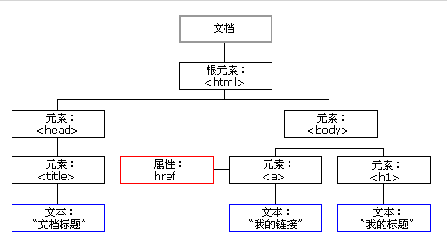
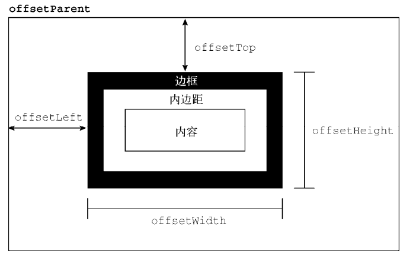
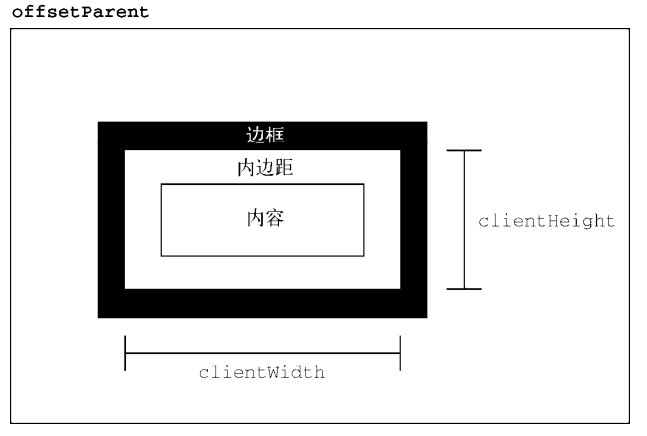
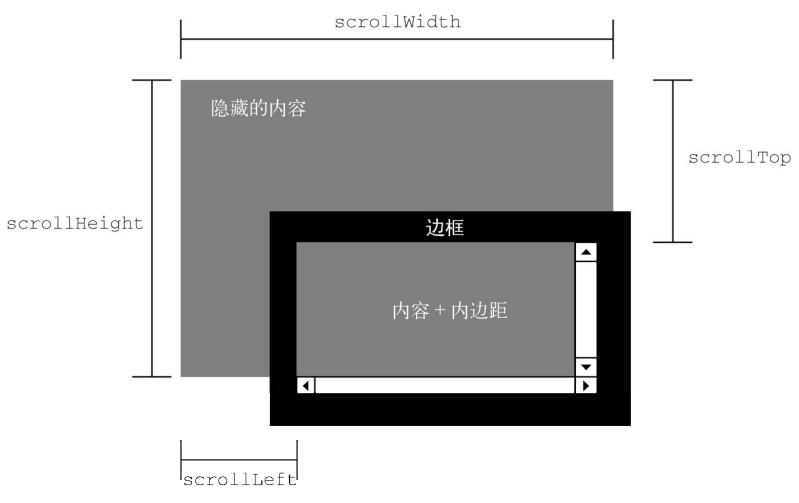
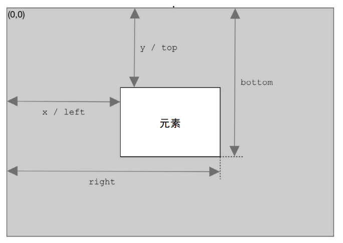
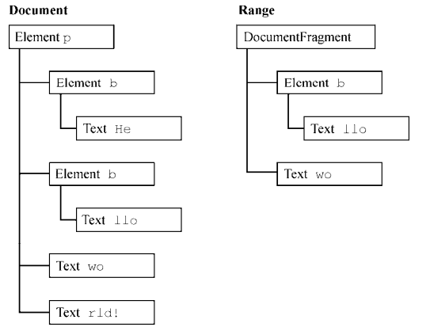

DOM
DOM
DOM：Document Object Model 文档对象模型
DOM 是网页的编程接口。是针对 XML 但经过扩展用于 HTML 的应用程序编程接口。DOM 将整个页面映射成一个多节点结构。
节点层级
节点
DOM 的最小组成单位。
常用节点：
- 文档节点（document）
document 对象最为 window 对象的属性，根节点，不用获取，可以直接使用。 - 元素节点（Element）
HTML 文档中的 HTML 标签。根元素节点只有<html>一个。 - 属性节点（Attribute）
属性节点是元素节点的一部分，不是子节点。上图中，href 为 a 标签的属性节点。 - 文本节点（Text）
HTML 标签中的文本内容。
其他节点：
- DocumentType
doctype 标签（如<!DOCTYPE html>）。 - Comment
注释 - DocumentFragment
文档的片段
节点树

最顶层节点为
document 节点，代表整个文档。文档里最高的 HTML 标签一般为 <html>，构成树结构的根节点，其他 HTML 标签节点都是它的下级。DOM 提供操作接口，用于获取三种关系的节点：
- 子节点接口，包括
firstChild（第一个子节点）、lastChild（最后一个子节点）等属性 - 同级接口，包括
nextSibling（紧邻在后的那个同级节点）、previousSibling（紧邻在前的那个同级节点）属性
Node 类型
这个接口是所有 DOM 节点类型都必须实现的。Node 接口在 JavaScript 中被实现为 Node 类型，在除 IE 之外的浏览器中都可以直接访问这个类型。在 JavaScript 中，所有节点类型都继承 Node 类型，因此所有类型都共享相同的基本属性和方法。
属性
nodeType
nodeType 属性返回一个整数值，表示节点类型，常用节点类型如下：
| 节点类型 | 值 | 对应常量 |
|---|---|---|
| 文档节点（document） | 9 | Node.DOCUMENT_NODE |
| 元素节点（Element） | 1 | Node.ELEMENT_NODE |
| 属性节点（Attribute） | 2 | Node.ATTRIBUTE_NODE |
| 文本节点（Text） | 3 | Node.TEXT_NODE |
| 文档类型节点（DocumentType） | 10 | Node.DOCUMENT_TYPE_NODE |
| 注释节点（Comment） | 8 | Node.COMMENT_NODE |
| 文档片段节点 | 11 | Node.DOCUMENT_FRAGMENT_NODE |
1 | |
nodeName
nodeName 属性返回节点的名称
1 | |
nodeValue
nodeValues 属性返回一个字符串，表示当前节点本身的文本值
1 | |
textComtent
textComtent 属性返回当前节点和它的所有后代节点的文本内容
1 | |
nextSibling
nextSiling 属性返回紧跟在当前节点后面的第一个同级节点。如果当前节点后面没有同级节点，则返回 null（可能会获得“空格”或“回车”这样的节点）
1 | |
previousSibling
previousSibling 属性返回当前节点前面的、距离最近的一个同级节点。如果当前节点前面没有同级节点，则返回 null
1 | |
parentNode
parentNode 属性返回当前节点的父节点。一个节点的父节点只可能是三种类型：元素节点、文档节点、文档片段节点
1 | |
parentElement
parentElement 属性返回当前节点的父元素节点。如果当前节点没有父元素节点，或者父节点不是元素节点，返回 null
1 | |
firstChild 和 lastChild
firstChild 属性返回当前节点的第一个子节点，没有则返回 null；lastChild 返回最后一个子节点
1 | |
childNodes
childNodes 属性返回一个类似数组的对象（Nodelist 集合），成员包括当前节点的所有子节点
1 | |
ownerDocument
指向代表整个文档的文档节点的指针。
方法
以下方法为常用操作节点的方法，且都需要父节点对象进行调用。
- hasChildNodes()
是否有孩子节点。 - appendChild()
接受一个节点对象作为参数，将其作为最后一个子节点，插入当前节点。返回值为插入文档的子节点。
1 | |
- insertBefore(插入节点，参照节点)
将某个节点插入父节点内部的指定位置
1 | |
- removeChild(插入节点，替换节点)
接受一个子节点作为参数，用于从当前节点移除该子节点，并返回移除的节点
1 | |
- replaceChild()
将一个新的节点替换当前节点的某一个节点
1 | |
- cloneNode()
复制调用该方法的节点，参数为 true 时执行深复制。
Document 类型
JavaScript 通过使用 Document 类型表示文档。在浏览器中，document 对象表示整个 HTML 文档，document 对象时 HTMLDocument 的一个实例。document 对象是 window 对象的一个属性，可以直接调用。HTMLDocument 继承自 Document 类型。
属性
- documentElement：始终指向 HTML 页面中的
<html>元素 - body：直接指向
<body>元素 - doctype：访问
<!DOCTYPE>，浏览器支持不一致，很少使用 - title：获取文档的标题
- URL：取得完整的 URL
- domain：取得域名，并且可以进行设置。在跨域访问中经常用到。
- referrer：取得链接到当前页面的那个页面的 URL，即来源页面的 URL。
- images：获取所有的 img 对象，返回 HTMLCollection 类数组对象。
- forms：获取所有的 form 对象，返回 HTMLCollection 类数组对象。
- links：获取文档中所有 href 属性的
<a>元素
DOM 编程界面
HTML DOM 能够通过 JavaScript 进行访问
在 DOM 中，所有 HTML 元素都被定义为对象。
编程界面是每个对象的属性和方法。属性是能够获取或设置的值（如改变 HTML 元素的内容），方法是能够完成的动作（如添加或删除 HTML 元素）
1 | |
其中，getElementById() 是方法，innerHTML 是属性。
innerHTML 属性：
获取元素内容最简单的方法是使用 innerHTML 属性。该属性用于获取或替换 HTML 元素的内容，包括 <html> 和 <body>。
HTMLCollection 对象（实时更新）
1 | |
注意：NodeList、NamedNodeMap 也是实时更新的。
迭代 NodeList 时，需要创建一个变量用于保存查询的 NodeList 的 length 或反向迭代，再进行遍历。
1 | |
特殊集合（实时更新）
- document.anchors：包含文档中所有带 name 属性的
<a>元素。 - document.applets：包含文档中所有
<applet>元素（已废弃）。 - document.forms：包含文档中所有
<form>元素（与document.getElementsByTagName ("form")返回的结果相同）。 - document.images：包含文档中所有
<img>元素（与document.getElementsByTagName ("img")返回的结果相同）。 - document.links：包含文档中所有带 href 属性的
<a>元素。
查找元素
- getElementById()
返回匹配指定 id 的一个元素 - getElementByTagName()
返回一个HTMLCollection（伪数组），包含匹配指定标签名的所有元素 - getElementByClassName()
返回一个 HTML 集合HTMLCollection（伪数组），包含匹配指定类名的所有元素
添加元素
createElement()
创建一个新的 HTML 元素，一般与 appendChild()] 或 insertBefore() 连用
1 | |
写入
write()
向文档写入文本或 HTML 表达式或 JavaScript 代码（使用 JS 写入时，块级元素以及行内元素特性存在）
1 | |
Element 类型
Element 对象对应网页的 HTML 元素。每一个 HTML 元素在 DOM 树上都会转化成一个 Element 节点对象。
属性
- attributes：返回一个与该元素相关的所有属性的集合
- classList：返回该元素包含的 class 属性的集合
- className：获取或设置指定元素的 class 属性的值
- clientHeight：获取元素内部的高度，包含内边距，但不包括水平滚动条、边框和外边距
- clientTop：返回该元素距离它上边界的高度
- clientLeft：返回该元素距离它左边界的宽度
- clientWidth：返回该元素它内部的宽度，包括内边距，但不包括垂直滚动条、边框和外边距
- innerHTML：设置或获取 HTML 语法表示的元素的后代
- tagName：返回当前元素的标签名
常用方法
element.innerHTML = new html content
改变元素的 innerHTMLelement.attribute = value
修改属性的值 (针对内置属性值)
1 | |
element.getAttribute()
返回元素节点的指定属性值
1 | |
通过 DOM 对象访问的属性中有两个返回的值跟使用 getAttribute() 取得的值不一样。
| DOM 对象访问 | getAttribute | |
|---|---|---|
| style | CSS 字符串 | 对象（CSSStyleDeclaration） |
| 事件处理程序 | 一个 JavaScript 函数 | 字符串形式的源代码 |
element.setAttribute(attribute, value)
设置或改变 HTML 元素的属性（针对自定义属性值）
1 | |
element.style.property = new style
改变 HTML 元素的样式
1 | |
Text 类型
Text 节点由 Text 类型表示，包含按字面解释的纯文本，也可能包含转义后的 HTML 字符，但不含 HTML 代码
属性及方法
- length：文本长度
- **appendData(text)**：追加文本
- **deleteData(beginIndex, count)**：删除文本
- **insertData(beginIndex, text)**：插入文本
- **replaceData(beginIndex, count, text)**：替换文本
- **splitText(beginIndex)**：从 beginIndex 位置将当前文本节点分成两个文本节点
- **document.createTextNode(text)**：创建文本节点，参数为要插入节点中的文本
- **substringData(beginIndex, count)**：从 beginIndex 开始提取 count 个子字符串
- **normalize()**：在文本节点父节点调用，合并所有文本节点
- **splitText(beginIndex)**：拆分文本节点
其他类型
Comment 类型
不支持子节点；
与 Text 类型继承同一基类；
主要表示为注释。
CDATASection 类型
表示 XML 中特有的 CDATA 区块；
继承 Text 类型。
1 | |
MutationObserver 接口
MutationObserver 可以观察目标节点的属性变化、文本变化和子节点变化。
1 | |
mutationRecords 是属性修改时返回的按顺序入队的 MutationRecord 实例的数组。
复用
多次调用 observe() 可以复用一个 MutationObserver 实例观察多个对象。
但会被 disconnect() 中断所有对象的观察。
重用
调用 disconnect() 不会结束 MutationObserver 声明，可以再次观察新的目标节点。
MutationObserverInit
MutationObserverInit 控制观察范围。
- subtree：观察子树（包括后代节点）变化
- attributes：属性节点
- characterData：文本节点
- childLis：子节点
1 | |
MutationObserver 引用
MutationObserver 对目标节点拥有弱引用，不影响垃圾回收目标节点。
但目标节点对 MutationObserver 拥有强引用，目标节点移除会导致 MutationObserver 也被回收。
MutationRecord 引用
MutationRecord 会有对目标节点的引用，会导致目标节点不被垃圾回收。
如果要保留记录，将需要的信息保留在一个新对象里，而不是保留 MutationRecord 对象。
DOM事件机制
DOM2 和 DOM3
命名空间
1 | |
DOM2：
svg 中
- localName：svg
- prefix：s (tagName：
${prefix}:${localName}) - namespaceURL：http://www.w3.org/2000/svg
DOM3：
isDefaultNamespace(namespaceURI)lookupNamespaceURI(prefix)lookupPrefix(namespaceURI)
Node
DOM3：
- **isSameNode()**：节点相同，引用同一个节点对象
- **isEqualNode()**：节点相等，节点类型相同，拥有相等的属性，childNodes 和 attributes 相等
- **setUserData(键,值,处理函数)/getUserData(键)**：为节点附加数据，处理函数在节点被操作时执行，参数（类型：1 复制、2 导入、3 删除、4 重命名，键，值，源节点，目标节点）
Iframe
DOM2：
- contentDocument：指向
<iframe>中的 document 对象 - contentWindow：指向
<iframe>中的 window 对象
样式
DOM2：
连字符转化为驼峰形式。
特殊：float 转化为 cssFloat。
- cssText，包含 style 属性中的 CSS 代码。
- length，应用给元素的 CSS 属性数量。
- parentRule，表示 CSS 信息的 CSSRule 对象（下一节会讨论 CSSRule 类型）。
- **getPropertyPriority(propertyName)**，如果 CSS 属性 propertyName 使用了
!important则返回 “important”，否则返回空字符串。 - **getPropertyValue(propertyName)**，返回属性 propertyName 的字符串值。
- **item(index)**，返回索引为 index 的 CSS 属性名。
- **removeProperty(propertyName)**，从样式中删除 CSS 属性 propertyName。
- **setProperty(propertyName, value, priority)**，设置 CSS 属性 propertyName 的值为 value，priority 是 “important” 或空字符串。
- document.styleSheets，访问文档上的所有样式表。
元素尺寸
1.偏移尺寸
只读，每次查询重新计算。

2.客户端尺寸
只读，每次查询重新计算。

3.滚动尺寸
- scrollHeight，没有滚动条出现时，元素内容的总高度。
- scrollLeft，内容区左侧隐藏的像素数，设置这个属性可以改变元素的滚动位置。
- scrollTop，内容区顶部隐藏的像素数，设置这个属性可以改变元素的滚动位置。
- scrollWidth，没有滚动条出现时，元素内容的总宽度。

4.确定元素尺寸
getBoundingClientRect() 返回对象中属性

遍历
NodeIterator
1 | |
参数：
- root，遍历的根节点。
- wateToShow，要访问的节点。
- NodeFilter.SHOW_ALL，所有节点。
- NodeFilter.SHOW_ELEMENT，元素节点。
- NodeFilter.SHOW_ATTRIBUTE，属性节点。由于 DOM 的结构，因此实际上用不上。
- NodeFilter.SHOW_TEXT，文本节点。
- NodeFilter.SHOW_CDATA_SECTION，CData 区块节点。不是在 HTML 页面中使用的。
- NodeFilter.SHOW_ENTITY_REFERENCE，实体引用节点。不是在 HTML 页面中使用的。
- NodeFilter.SHOW_ENTITY，实体节点。不是在 HTML 页面中使用的。
- NodeFilter.SHOW_PROCESSING_INSTRUCTION，处理指令节点。不是在 HTML 页面中使用的。
- NodeFilter.SHOW_COMMENT，注释节点。
- NodeFilter.SHOW_DOCUMENT，文档节点。
- NodeFilter.SHOW_DOCUMENT_TYPE，文档类型节点。
- NodeFilter.SHOW_DOCUMENT_FRAGMENT，文档片段节点。不是在 HTML 页面中使用的。
- NodeFilter.SHOW_NOTATION，记号节点。不是在 HTML 页面中使用的。
- filter，过滤器。
- NodeFilter.FILTER_ACCEPT，应该访问。
- NodeFilter.FILTER_SKIP，跳过当前节点及子树。
- entityReferenceExpansion，是否扩充实体引用。
TreeWalker
NodeIterator 升级版。
新增属性/方法：
- currentNode，遍历过程中上一次返回的节点。
- **parentNode()**，遍历到当前节点的父节点。
- **firstChild()**，遍历到当前节点的第一个子节点。
- **lastChild()**，遍历到当前节点的最后一个子节点。
- **nextSibling()**，遍历到当前节点的下一个同胞节点。
- **previousSibling()**，遍历到当前节点的上一个同胞节点。
filter 过滤器新增：
- NodeFilter.FILTER_SKIP，跳过节点，访问子树中下一个节点。
- NodeFilter.FILTER_REJECT，表示跳过当前节点及子树。
范围
属性
- startContainer，选区第一子结点的父节点。
- startOffset，选区第一子结点在父节点的子节点中的索引。
- endContainer，选区最后一子节点的父节点。
- endOffset，选区最后一子节点在父节点的子节点中的索引。
- commonAncestorContainer，startContainer 和 endContainer 的第一个祖先节点。
方法
- **setStartBefore(refNode)**，修改选区范围，使 refNode 成为选区第一子节点。
- **setStartAfter(refNode)**，修改选区范围，使 refNode 的下一兄弟节点成为选区第一子节点。
- **setEndBefore(refNode)**，修改选区范围，使 refNode 的上一个兄弟节点成为选区最后一子节点。
- **setEndAfter(refNode)**，修改选区范围，使 refNode 成为选区最后一子节点。
选择
- selectNode()
- selectNodeContents()
1 | |
1 | |
- **setStart(参照节点,偏移量)**，参照节点为 startContainer，偏移量为 startOffset。
- **setEnd(参照节点,偏移量)**，参照节点为 endContainer，偏移量为 endOffset。
1 | |
范围会确定缺失的标签，然后重构出完整的标签。

- **deleteContents()**，删除范围包含的节点片段。
- **extractContents()**，移除并返回范围包含的节点片段。
- **cloneContents()**，复制范围包含的节点片段。
- **insertNode()**，插入到选区前。
<p id="p1"><b>Hello</b> world</p>====><p id="p1"><b>He<span style="color: red">Inserted text</span>llo</b> world</p> - **surroundContents(给定节点)**，在范围周围包含内容。给定节点不能是 Document、DocumentType 或 DocumentFragment 类型，范围需要完整 DOM 结构，否则报错。
- **collapse(boolean)**，折叠范围到 起点 (true)/**终点 (false)**。
- **compareBoundaryPoints(常量，目标范围)**，边界点位于目标范围之后返回 1，之前 -1，相等 0。
- Range.START_TO_START（0），比较两个范围的起点；
- Range.START_TO_END（1），比较第一个范围的起点和第二个范围的终点；
- Range.END_TO_END（2），比较两个范围的终点；
- Range.END_TO_START（3），比较第一个范围的终点和第二个范围的起点。
- **cloneRange()**，复制范围。
- **detach()**，将范围从文档中剥离，然后可以设置为 null，解除引用。
DOM 扩展
Selectors API
- querySelector()
返回文档中匹配指定的 CSS 选择器的 第一元素
1 | |
- querySelectorAll()
HTML5 新引入的方法，返回文档中匹配的 CSS 选择器的所有元素节点列表
1 | |
- matchs()
匹配元素是否符合 css 选择符参数
元素遍历
针对 Element 的属性。
- childElementCount
- firstElementChild
- lastElementChild
- previousElementSibling
- nextElementSibling
HTML5
- **getElementsByClassName()**：返回包含指定类的元素类数组对象
- classList：对元素的 class 进行添加、删除和替换（弥补 className 缺点：只是一个字符串，修改即对字符串的修改）
- document.activeElement：始终包含当前获得焦点的元素（默认：加载前：null；加载后：body）
- **document.hasFocus()**：当前文档是否拥有焦点
- document.readyState：文档是否加载完成（loading 加载中，complete 加载完成）
- document.compatMode：渲染模式（CSS1Compat 标准模式，BackCompat 混杂模式）
- document.head：
<head>元素 - document.characterSet：字符集
- innerHTML：向元素中插入 HTML 字符串
- outerHTML：HTML 字符串取代调用元素
- **insertAdjacentHTML(option,HTML)、insertAdjacentText(option,HTML)**：向元素插入 HTML 或文本
option：beforebegin、afterbegin、beforeend、afterend
假设当前元素是<p>Hello world!</p>，则 “beforebegin” 和 “afterbegin” 中的 “begin” 指开始标签<p>；而 “afterend” 和 “beforeend” 中的 “end” 指结束标签</p>。 - **scrollIntoView(布尔值或对象)**：将元素滚动到视口中
布尔值：是否与滚动后元素与视口顶部对齐
对象：{behavior: 过渡动画, bolck: 垂直方向对齐, inline: 水平方向对齐}
自定义属性 data-*
data-myName、data-myname—>element.dataset.myname
data-my-name、data-my-Name—>element.dataset.myName
表单
提交表单
1 | |
- 表单中有上述任一按钮且焦点在非 textarea 的控件上，使用回车提交。
- 点击提交提交。
- 通过 JS 调用
form.submit()。
通过按钮提交时，会触发 submit 事件，可在其中进行校验。
通过 JS 调用submit()时，不会触发 submit 事件，需要在调用之前自行校验。
重置表单
1 | |
- 重置按钮。
- JS 调用
form.reset()。
以上方法都会触发 reset 事件，可在事件中取消重置行为。
重置时会恢复第一次加载页面时的值。
文本选择
文本框获得焦点时选中文本：
1 | |
取得选中文本：
1 | |
部分获取选中内容（获得焦点时会显示选中内容）：
1 | |
富文本编辑
- 嵌入 iframe 设置文档属性
designMode=on。 - 设置元素属性
contenteditable=true。
选中文本 getSelection
1 | |
通过表单提交时，通过 innerHTML 获取 html 赋值给表单控件的值。
XML
解析和序列化
通过 DOMParser 将 xml 字符串解析为 dom；
通过 XMLSerializer 将 dom 解析为 xml 字符串。
当解析失败时浏览器的处理可能会不同，检测返回 dom 中是否还有 <parsererror> 元素判断解析是否完成。
1 | |
XPath
部分结果类型
ORDERED_NODE_ITERATOR_TYPE，返回匹配节点集合。
1 | |
ORDERED_NODE_SNAPSHOT_TYPE，返回节点集合的快照。
1 | |
FIRST_ORDERED_NODE_TYPE，返回节点集合的第一个结果。
1 | |
NUMBER_TYPE，返回结合的结果数。
1 | |
XPath– 处理命名空间
1 | |
针对带有命名空间前缀的 xml，需要传入解释器。
1 | |
JSON
stringify
参数二替代函数中，接受参数 (key,value)，如果返回 undefined，转换时则会忽略对应的键。JSON.stringify() 执行时的顺序：
- 使用
toJSON()获取实际值或使用默认序列化。 - 参数二过滤函数存在，对 (1) 的值执行过滤操作。
- 进行序列化。
- 参数三缩进 (字符串或数字) 存在，对 (3) 的值进行缩进处理。
parse
参数二还原函数中，接受参数 (key,value)，如果返回 undefined，则会删除对应的键。